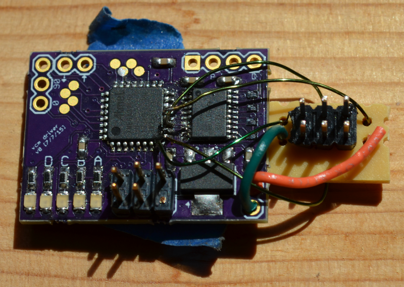

Automatic Jack was the hardware hacker from the pair of hackers in William Gibson's Burning Chrome.
I was working late in the loft one night, shaving down a chip, my arm off and the little waldo jacked straight into the stump. The waldo looks like an old audio turntable, the kind that played disc records, with the vise set up under a transparent dust cover. The arm itself is just over a centimeter long, swinging out on what would’ve been the tone arm on one of those turntables. But I don’t look at that when I’ve clipped the leads to my stump; I look at the scope, because that’s my arm there in black and white, magnification 40x. I ran a tool check and picked up the lazer. It felt a little heavy; so I scaled my weight-sensor input down to a quarter-kilo per gram and got to work. At 40x the side of the program looked like a trailer truck.
I wanted to make a cheap atomic force microscope . I had very little idea of what I was doing.
The system architecture concept was to combine several cheap and common items to bootstrap to atomic resolution. A flexure-based XY stage would use Michelson interferometers for closed-loop positioning with a resolution of tens of nanometers. Z positioning would be handled using a Blu-ray drive head which can do submicron positioning using a focus-based optical sensing method. Then a tungsten probe on a piezo disk actuator would scan the surface of the sample with sub-nanometer resolution.
I designed a VCM driver board for the Z stage. It was my first time soldering wafer level packages which was a fun adventure. I also took a leap and used an XMEGA microcontroller for the first time on the board. This resulted in spending a lot of time just trying to get code flashed.

Eventually I started a full time job and abandoned this project.